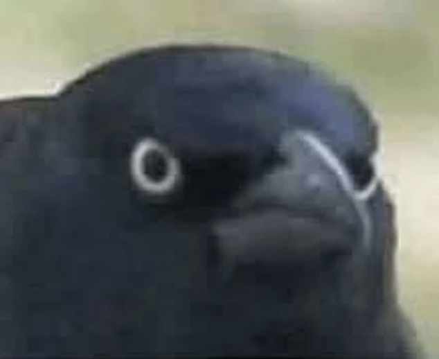

Bird Game
Loading…
📖 Journal
⭐
0
upgrade point
s
available — spend them after your next win!
Loading…
…
Loading…
Junk: −1 extra move when eaten
Stone: blocks beak, never eaten
Hover to preview your beak · Click to eat!
🐦
Species
Size · Habitat
Habitat.
Beak.
Fun fact.
Goal
🌿 Start Hunting!
🎉 Full Belly!
Result.
⭐
0 points
Done 🐦
reset all progress
📖 Bird Journal
0 / 0 birds discovered
✕
Try Again 🐦